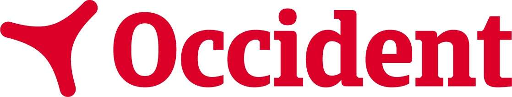
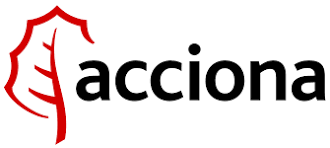
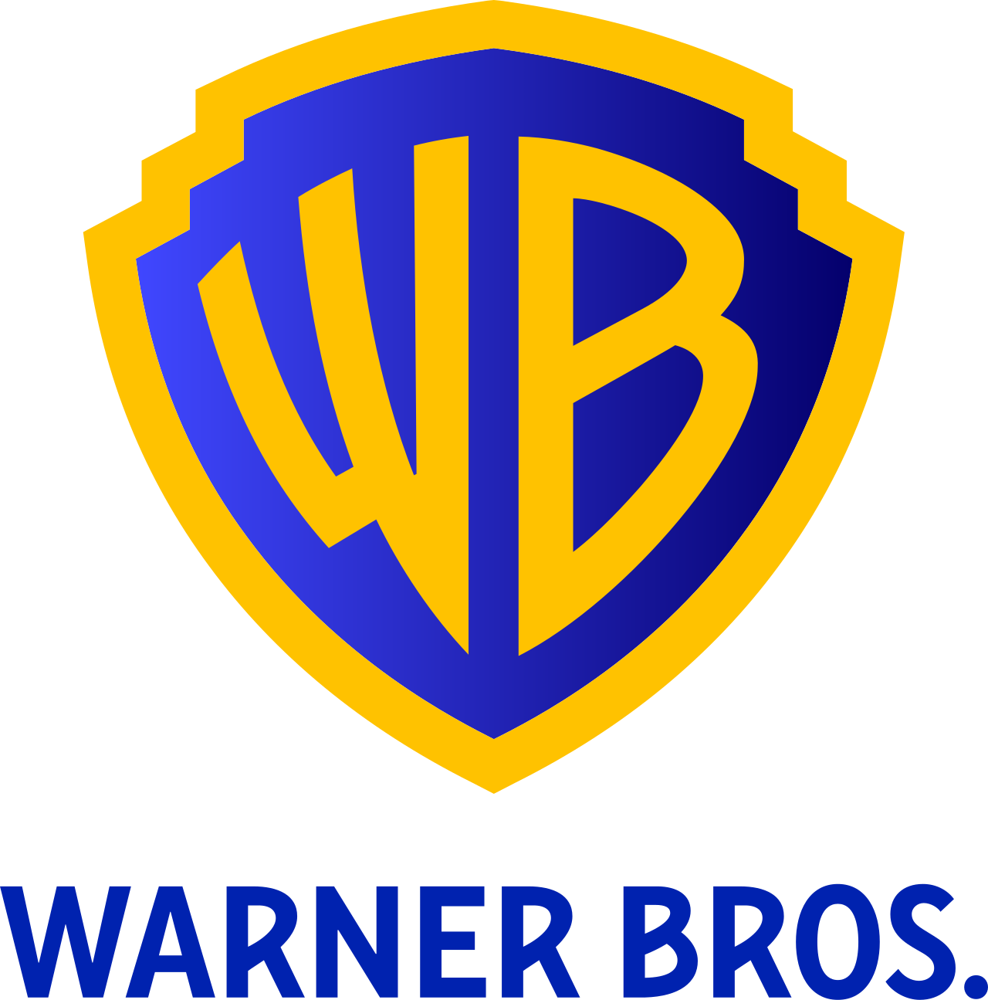
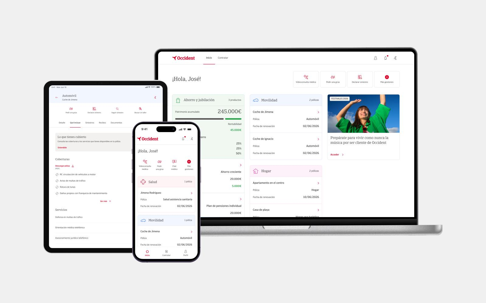

Lautaro Curto — Product Designer / Design Engineer
A real human being, diseñando producto real.
Diez años moviéndome entre contenido, marca y producto — los últimos cuatro y pico, de lleno en diseño de producto. La curiosidad nunca la solté; hoy es mi herramienta de trabajo más afilada.




De contar historias de marca a diseñar los productos que las sostienen.
Empecé mi carrera contando historias: community management, creación de contenido y copywriting para marcas como Netflix, Spotify y Warner Bros. De ahí pasé a gestión de proyectos y dirección de marca, entendiendo cómo se mueven las empresas por dentro — plazos, clientes, equipos, decisiones bajo presión.
Hace más de cuatro años ese camino confluyó en producto digital, y fue evidente que ahí estaba el punto exacto entre mi interés por la tecnología y mi necesidad de seguir contando historias — solo que ahora las historias las viven los usuarios, no las leen. Hoy trabajo en Redbility, dentro del equipo JUNGLE, diseñando producto para clientes como Occident y Acciona Mobility / Silence.
No vengo del molde clásico de diseñador técnico, y no pretendo venderlo como tal. Lo que aporto es otra cosa: capacidad de adaptarme rápido a contextos nuevos, ver el negocio detrás de la pantalla, y una curiosidad que no se apaga — me pasa con el diseño, con la escritura, con la música, con casi todo. Esa mezcla es la que, en cada equipo en el que entré, terminó siendo la sorpresa.
Producto real, en producción — y un lateral propio para mostrar cómo pienso cuando nadie me lo pide.
Occident — renovación de e-cliente
Simplificar la gestión de pólizas y siniestros para un producto que casi nadie abre cuando está de buen humor.
Ver caso completo →
Acciona Motosharing / Silence
Diseñar para un producto que se usa parado en la calle, con prisa, con una sola mano.
Ver caso completo →ACCIONA Carbon Technologies
Calcular tu huella de carbono sin que se sienta un trámite — y compensarla en pocos pasos.
Ver caso completo →Konfía Seguros
De la idea al prototipo navegable en React, solo — pensando, diseñando y construyendo.
Ver caso completo →niba
Diseñar la confianza digital de una comercializadora de energía que nace sin oficinas.
Ver caso completo →Antes de diseñar pantallas, escribía para pensar. Todavía lo hago, de a ratos.
Pocos diseñadores escriben fuera del trabajo — a mí me sirve para pensar mejor, y de paso queda registro. Algunas notas sueltas:
Está un poco desactualizado — es de lo próximo que quiero retomar. Si estás leyendo esto en una versión futura del sitio, probablemente ya lo hice.
¿Un proyecto, una vacante, o simplemente curiosidad?
Estoy abierto a roles de Product Designer o Design Engineer con autonomía real y espacio para seguir aprendiendo. Si algo de esto te resuena, escribime.